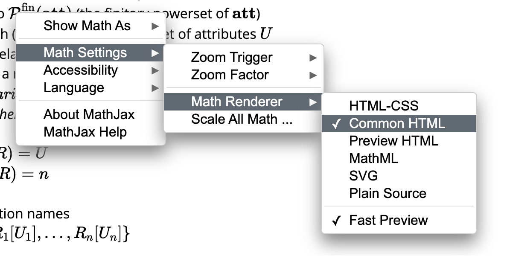

Conjunctive Queries
Mathjax may have issues to display math symbols in particular styles, such as \(\mathcal{A}\).
You can try to mitigate this by changing the Math Renderer to Common HTML (right click on any math expressions):  \( \newcommand{\att}{\textbf{att}} \) \( \newcommand{\attTotalOrder}{\leq_{\att}} \) \( \newcommand{\dom}{\textbf{dom}} \) \( \newcommand{\Dom}{\textit{Dom}} \) \( \newcommand{\relname}{\textbf{relname}} \) \( \newcommand{\sort}{\textit{sort}} \) \( \newcommand{\arity}{\textit{arity}} \) \( \newcommand{\finPowerSet}{\mathcal{P}^{\text{fin}}} \) \( \newcommand{\dbschema}[1]{\textbf{#1}} \) \( \newcommand{\dbinst}[1]{\textbf{#1}} \) \( \newcommand{\rel}[1]{\textit{#1}} \) \( \newcommand{\attname}[1]{\textit{#1}} \) \( \newcommand{\varSet}{\textbf{var}} \) \( \newcommand{\ans}{\textit{ans}} \) \( \newcommand{\var}{\textit{var}} \) \( \newcommand{\adom}{\textit{adom}} \) \( \newcommand{\tableau}{\textbf{T}} \) \( \newcommand{\free}{\textit{free}} \)
a query (mapping) is from (or over) its input schema and to its output schema.
- query: a syntactic object
- query mapping: a function defined by a query interpreted under a specified semantics
- its domain: the family of all instances of an input schema
- its range: the family of instances of an output schema
- we often blur query and query mapping when the meaning is clear from context
- input schema: a specified relation or database schema
- output schema: a relation schema or database schema
- For a relation schema, the relation name may be specified as part of the query syntax or by the context
- \(q_1 \equiv q_2\) denotes two queries \(q_1\) and \(q_2\) over \(\dbschema{R}\) are equivalent, i.e., they have the same output schema and \(q_1(\dbinst{I}) = q_2(\dbinst{I})\) for each instance \(\dbinst{I}\) over \(\dbschema{R}\).
Logic-Based Perspective
Three versions of conjunctive queries:
- Rule-Based Conjunctive Queries
- Tableau Queries
- Conjunctive Calculus
Rule-Based Conjunctive Queries
Definition
A rule-based conjunctive query (or often more simply called rules) \(q\) over a relation schema \(\dbschema{R}\) is an expression of the form \[ \ans(u) \leftarrow \rel{R}_1(u_1), \ldots, \rel{R}_n(u_n) \] where \(n \geq 0\), \(\rel{R}_1, \ldots, \rel{R}_n\) are relation names in \(\dbschema{R}\); \(\ans\) is a relation name not in \(\dbschema{R}\); and \(u, u_1, \ldots, u_n\) are free tuples (i.e., may use either variables or constants).
- \(\var(q)\): the set of variables occurring in \(q\).
- body: \(\rel{R}_1(u_1), \ldots, \rel{R}_n(u_n)\)
- head: \(\ans(u)\)
- range restricted: each variable occurring in the head also occurs in the body
- all conjunctive queries considered here are range restricted
- valuation: a valuation \(v\) over \(V\), a finite subset of \(\varSet\), is a total function \(v\) from \(V\) to \(\dom\) (of constants)
- extended to be identity on \(\dom\) (so that the domain can contain both variables and constants)
- extended to map free tuples to tuples (so that the domain/range can be in the tuple form)
Semantics
Let \(q\) be the query, and let \(\dbinst{I}\) be a database instance of schema \(\dbschema{R}\). The image of \(\dbinst{I}\) under \(q\) is:
\[ q(\dbinst{I}) = \{ v(u) \mid v \text{ is a valuation over } \var(q) \text{ and } v(u_i) \in \dbinst{I}(\rel{R}_i) \text{ for each } i \in [1, n] \} \]
- active domain
- of a database instance \(\dbinst{I}\), denoted \(\adom(\dbinst{I})\), is the set of constants that occur in \(\dbinst{I}\)
- of a relation instance \(I\), denoted \(\adom(I)\), is the set of constants that occur in \(I\)
- of a query \(q\), denoted \(\adom(q)\), is the set of constants that occur in \(q\)
- \(\adom(q, \dbinst{I})\) is an abbreviation for \(\adom(q) \cup \adom(\dbinst{I})\)
- \(\adom(q(\dbinst{I})) \subseteq \adom(q, \dbinst{I})\)
- extensional relations: relations in the body of the query, i.e., \(\rel{R}_1, \ldots, \rel{R}_n\)
- because they are known/provided by the input instance \(\dbinst{I}\)
- intensional relation: the relation in the head of the query, i.e., \(\ans\)
- because it is not stored and its value is computed on request by the query
- extensional database (edb): a database instance associated with the extensional relations
- intensional database (idb): the rule itself
- idb relation: the relation defined by the idb
Properties
Conjunctive queries are:
- monotonic: a query \(q\) over \(\dbschema{R}\) is monotonic if for each \{\dbinst{I}, \dbinst{J}\} over \(\dbschema{R}\), \(\dbinst{I} \subseteq \dbinst{J} \implies q(\dbinst{I}) \subseteq q(\dbinst{J})\)
- satisfiable: a query \(q\) is satisfiable if there exists a database instance \(\dbinst{I}\) such that \(q(\dbinst{I}) \neq \emptyset\)
Tableau Queries
A tableau query is simply a pair \((\tableau, u)\) where \(\tableau\) is a tableau and each variable in \(u\) also occurs in \(\tableau\).
This is closest to the visual form provided by Query-By-Example (QBE).
- summary: the free tuple \(u\) representing the tuples included in the answer to the query
- embedding: a valuation \(v\) for the variables occurring in \(\tableau\) such that \(v(\tableau) \subseteq \dbinst{I}\)
- the output of \((\tableau, u)\) on \(\dbinst{I}\) consists of all tuples \(v(u)\) for each embedding \(v\) of \(\tableau\) into \(\dbinst{I}\)
- typed: a tableau query \(q = (\tableau, u)\) under the named perspective, where \(\tableau\) is over relation schema \(R\) and \(\sort(u) \subseteq \sort(R)\), is typed if no variable of \(\tableau\) is associated with two distinct attributes in \(q\)
Examples
Table Movies
| Title | Director | Actor |
|---|---|---|
| \(x_{ti}\) | “Bergman” | \(x_{ac}\) |
Table Location
| Theater | Address | Phone |
|---|---|---|
| \(x_{th}\) | \(x_{ad}\) | \(x_p\) |
Table Pariscope
| Theater | Title | Schedule |
|---|---|---|
| \(x_{th}\) | \(x_{ti}\) | \(x_{s}\) |
The above tableau query is typed because each variable is associated with only one attribute:
- \(x_{ti}\): \(\attname{Title}\)
- \(x_{ac}\): \(\attname{Actor}\)
- \(x_{th}\): \(\attname{Theater}\)
- \(x_{ad}\): \(\attname{Address}\)
- \(x_p\): \(\attname{Phone}\)
- \(x_{s}\): \(\attname{Schedule}\)
However, the following tableau query is untyped:
Table Movies
| Title | Director | Actor |
|---|---|---|
| \(x_{ti}\) | \(x_{ac}\) | \(x_{ac}\) |
Because \(x_{ac}\) is associated with both \(\attname{Director}\) and \(\attname{Actor}\).
Conjunctive Calculus
The conjunctive query \[ \ans(u) \leftarrow \rel{R}_1(u_1), \ldots, \rel{R}_n(u_n) \]
can be expressed as the following conjunctive calculus query that has the same semantics: \[ \left\{ e_1, \ldots, e_m \vert \exists x_1, \ldots, x_k \left( \rel{R}(u_1) \wedge \ldots \wedge \rel{R}(u_n) \right) \right\} \] where \(x_1, \ldots, x_k\) are all the variables occurring in the body and not the head.
Conjunctive Calculus Formula
Let \(\dbschema{R}\) be a relation schema. A (well-formed) formula over \(\dbschema{R}\) for the conjunctive calculus is an expression having one of the following forms:
- an atom over \(\dbschema{R}\);
- \(\varphi \wedge \psi \), where \(\varphi\) and \(\psi\) are formulas over \(\dbschema{R}\); or
- \(\exists x \varphi\), where \(x\) is a variable and \(\varphi\) is a formula over \(\dbschema{R}\).
An occurrence of a variable \(x\) in formula \(\varphi\) is free if:
- \(\varphi\) is an atom; or
- \(\varphi = (\psi \wedge \xi)\) and the occurrence of \(x\) is free in \(\psi\) or \(\xi\); or
- \(\varphi = \exists y \psi\), \(x \neq y\), and the occurrence of \(x\) is free in \(\psi\).
\(\free(\varphi)\): the set of free variables in \(\varphi\).
An occurrence of a variable that is not free is bound.
Conjunctive Calculus Query
A conjunctive calculus query over database schema \(\dbschema{R}\) is an expression of the form \[ \{ e_1, \ldots, e_m \mid \varphi \} \] where
- \(\varphi\) is a conjunctive calculus formula,
- \(\langle e_1, \ldots, e_m \rangle\) is a free tuple, and
- the set of variables occurring in \(\langle e_1, \ldots, e_m \rangle\) is exactly \(\free(\varphi)\).
For named perspective, the above query can be written as: \[ \{ \langle e_1, \ldots, e_m \rangle : A_1, \ldots, A_m \mid \varphi \} \]
Note: In the previous chapter, a named tuple was usually denoted as:
\[ \langle A_1:a_1, \ldots, A_m:a_m \rangle \]
But here we denote the named tuple as:
\[ \langle e_1, \ldots, e_m \rangle : A_1, \ldots, A_m \]
Not sure which one is better or whether the author did this intentionally.
Semantics
Valuation
A valuation over \(V \subset \varSet \) is a total function \(v\) from \(V\) to \(\dom\), which can be viewed as a syntactic expression of the form: \[ \{ x_1/a_1, \ldots, x_n/a_n \} \] where
- \(x_1, \ldots, x_n\) is a listing of \(V\),
- \(a_i = v(x_i)\) for each \(i \in [1, n]\).
Interpretation as a Set
If \(x \not \in V\), and \(c \in \dom\), then \(v \cup \{ x/c \}\) is the valuation over \(V \cup \{ x \}\) that agrees with \(v\) on \(V\) and maps \(x\) to \(c\).
Satisfaction
Let \(\dbschema{R}\) be a database schema, \(\varphi\) a conjunctive calculus formula over \(\dbschema{R}\), and \(v\) a valuation over \(\free(\varphi)\). Then \(\dbinst{I} \models \varphi[v]\), if
- \(\varphi = \rel{R}(u)\) is an atom and \(v(u) \in \dbinst{I}(\rel{R})\); or
- \(\varphi = (\psi \wedge \xi)\) and \(\dbinst{I} \models \psi[v \vert_{\free(\psi)}]\) and \(\dbinst{I} \models \xi[v \vert_{\free(\xi)}]\); or
- \(\varphi = \exists x \psi\) and there exists a constant \(c \in \dom\) such that \(\dbinst{I} \models \psi[v \cup \{ x/c \}]\).
Image
Let \(q = \{ e_1, \ldots, e_m \mid \varphi \}\) be a conjunctive calculus query over \(\dbschema{R}\). For an instance \(\dbinst{I}\) over \(\dbschema{R}\), the image of \(\dbinst{I}\) under \(q\) is: \[ q(\dbinst{I}) = \{ v( \langle e_1, \ldots, e_m \rangle ) \mid v \text{ is a valuation over } \free(\varphi) \text{ and } \dbinst{I} \models \varphi[v] \} \]
- active domain
- of a formula \(\varphi\), denoted \(\adom(\varphi)\), is the set of constants that occur in \(\varphi\)
- \(\adom(\varphi, \dbinst{I})\) is an abbreviation for \(\adom(\varphi) \cup \adom(\dbinst{I})\)
- If \(\dbinst{I} \models \varphi[v]\), then the range of \(v\) is contained in \(\adom(\dbinst{I})\)
- to evaluate a conjunctive calculus query, one need only consider valuations with range constrained in \(\adom(\varphi, \dbinst{I})\), i.e., only a finite number of them
- equivalent: conjunctive calculus formulas \(\varphi\) and \(\psi\) over \(\dbschema{R}\) are equivalent,
if
- they have the same free variables and,
- for each \(\dbinst{I}\) over \(\dbschema{R}\) and valuation \(v\) over \(\free(\varphi) = \free(\psi)\), \(\dbinst{I} \models \varphi[v]\) if and only if \(\dbinst{I} \models \psi[v]\)